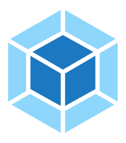
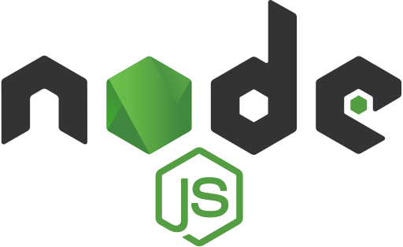

<title>ofa.js - Progressive Micro Frontend Framework</title>

<l-m src="../publics/_comps/punch-logo/punch-logo.html"></l-m>

<center-block>
  <punch-logo>
    
    <h2>ofa.js</h2>
    
    
    
    
    
    
    
    
    
    
    
  </punch-logo>
  <h2 style="margin: 32px 0 16px">Progressive Micro-Frontend Framework</h2>
  <p>
    Whether you're building a simple page, crafting an interactive app, or architecting a complex system, ofa.js handles it all with ease.
  </p>
  <div style="padding: 16px">
    <p-button size="large">
      <a href="./documentation/create-first-app.md">Learn ofa.js</a>
    </p-button>
  </div>
</center-block>

<l-m src="../publics/_comps/chat-bubble/chat-bubble.html"></l-m>

<l-m src="../publics/_comps/flow-container/flow-container.html"></l-m>

<l-m src="../publics/_comps/anchor-dialog/anchor-dialog.html"></l-m>

<center-block style="--container-max-width: 100%; padding: 128px 0">
  <h2>The Near-Silver-Bullet Frontend Framework</h2>
  <p>ofa.js is suitable for any application scenario.</p>
  <flow-container style="height: 300px; width: 100%">
    <chat-bubble id="case1-bubble" style="cursor: pointer">
      
      I'm too tired to learn more. I don't want to read your documentation. Can I still use it?
    </chat-bubble>
    <chat-bubble id="case2-bubble" style="cursor: pointer">
      
      I want to add a temporary feature to an old project
    </chat-bubble>
    <chat-bubble id="case3-bubble" style="cursor: pointer">
      
      I'm a beginner developer, and I was discouraged by Node.js and npm
    </chat-bubble>
    <chat-bubble id="case4-bubble" style="cursor: pointer">
      
      I'm developing a huge shopping mall system. Can you support it?
    </chat-bubble>
    <chat-bubble id="case5-bubble" style="cursor: pointer">
      
      I'm a backend developer. I just want to use backend template engines for development. Is ofa.js suitable for me?
    </chat-bubble>
  </flow-container>
  <p-button style="margin-top: 16px" size="large" variant="outlined">
    <a href="https://github.com/ofajs/discussion/discussions"> Leave us a message </a>
  </p-button>
  <anchor-dialog>
    <article for="#case1-bubble" style="max-width: 60vw; font-size: 18px; padding: 32px">
      <chat-bubble style="margin-bottom: 24px">
        
        I'm too tired to learn more. I don't want to read your documentation. Can I still use it?
      </chat-bubble>
      <p>You can directly reuse components developed with ofa.js without learning ofa.js first.</p>
      <p>
        After open-source component authors finish writing code, others only need to copy a few lines following the example to instantly bring the functionality into their own projects.
      </p>
    </article>
    <article for="#case2-bubble" style="max-width: 60vw; font-size: 18px; padding: 32px">
      <chat-bubble style="margin-bottom: 24px">
        
        I want to add a temporary feature to an old project
      </chat-bubble>
      <p>You can start using it immediately by introducing ofa.js via a script tag in your existing project.</p>
      <p>After introduction, a wide variety of components become readily available.</p>
    </article>
    <article for="#case3-bubble" style="max-width: 60vw; font-size: 18px; padding: 32px">
      <chat-bubble style="margin-bottom: 24px">
        
        I'm a beginner developer, and I was discouraged by Node.js and npm
      </chat-bubble>
      <p>ofa.js is extremely beginner-friendly, without the need to learn tools like Node.js or npm.</p>
      <p>You only need a browser and any static server to start developing.</p>
      <p>
        If you use Chrome, open
        <a href="https://core.noneos.com/?redirect=studio" target="_blank" style="color: var(--md-sys-color-primary)">OFA Studio</a>
        , this online tool, and you don't need to prepare a static server. Just get started.
      </p>
      <a href="./documentation/create-first-app.md" olink="" style="color: var(--md-sys-color-primary)">Tutorial: Create your first app</a>
    </article>
    <article for="#case4-bubble" style="max-width: 60vw; font-size: 18px; padding: 32px">
      <chat-bubble style="margin-bottom: 24px">
        
        I'm developing a huge shopping mall system. Can you support it?
      </chat-bubble>
      <p>ofa.js is perfect for large projects because it uses a micro-frontend architecture.</p>
      <p>
        You can split your shopping mall system into granular requirements, develop components one by one, and place them in separate folders. You can preview component effects directly through a static server.
      </p>
      <p>
        Finally, assemble them into a massive system. ofa.js's micro-frontend approach is exactly the remedy for monolith applications.
      </p>
      <p>
        You can refer to the case study
        <a href="https://os.noneos.com/" target="_blank" style="color: var(--md-sys-color-primary)">NoneOS</a>, which is an operating system developed with ofa.js and is extremely large in scale.
      </p>
    </article>
    <article for="#case5-bubble" style="max-width: 60vw; font-size: 18px; padding: 32px">
      <chat-bubble style="margin-bottom: 24px">
        
        I'm a backend developer. I just want to use backend template engines for development. Is ofa.js suitable for me?
      </chat-bubble>
      <p>
        ofa.js's SSR doesn't need to be bound to Node.js. As long as you follow the SCSR rules, you can use any backend language for template engine development.
      </p>
      <p>
        For details, refer to
        <a href="./documentation/ssr.md" style="color: var(--md-sys-color-primary)" olink="">ofa.js SSR</a>
      </p>
    </article>
  </anchor-dialog>
</center-block>

<l-m src="../publics/_comps/flow-chart/flow-chart.html"></l-m>

<style>
  .w-title {
    padding: 24px 0 8px;
    font-size: 14px;
    font-weight: bold;
    color: var(--md-sys-color-normal);
  }
</style>

<center-block>
  <h2>🤖 A Frontend Framework Better Suited for AI 🤖</h2>
  <p>No build step—just run the code.</p>
  <div class="w-title">
    AI uses
    <b style="color: var(--md-sys-color-primary)">ofa.js</b> to generate a frontend project
  </div>
  <flow-chart style="width: 100%; height: 100px">
    <div name="ai-model" to="container">AI Model</div>
    <div name="container" to="preview">Deploy code to static container</div>
    <div name="preview">Preview project</div>
  </flow-chart>
  <div class="w-title">AI workflow with mainstream frontend frameworks</div>
  <flow-chart style="width: 100%; height: 100px">
    <div name="ai-model" to="cloud-container">AI Model</div>
    <div name="cloud-container" to="init">Create cloud container</div>
    <div name="init" to="deploy">Install dependencies</div>
    <div name="deploy" to="preview">Build & deploy code</div>
    <div name="preview">Preview project</div>
  </flow-chart>

  <p-button size="large">
    <a href="./scenarios/more-suitable-for-ai.md">Learn more</a>
  </p-button>
</center-block>

<l-m src="../publics/_comps/support-platforms/support-platforms.html"></l-m>

<center-block>
  <h2>Development Based on Web Components</h2>
  <p>You can use ofa.js on any platform that supports Web Components</p>
  <support-platforms></support-platforms>
</center-block>

<center-block>
  <h2>Extremely Low Usage Barrier</h2>
  <p>Using components developed based on ofa.js eliminates the need to consider dependency and configuration issues</p>
  <o-playground name="Punch Demo" style="--editor-height: 300px; width: 100%">
    <code>
      <template>
        <!-- Load the developed punch-logo component -->
        <l-m src="https://ofajs.github.io/ofa-v4-docs/docs/publics/comps/punch-logo.html"></l-m>
        <!-- Use the punch-logo component -->
        <punch-logo style="margin: 50px 0 0 100px">
          
          <h2>No More Overtime</h2>
          <p slot="fly">Clock Out for Me</p>
          <p slot="fly">Leave Later</p>
          <p slot="fly">Weekend Overtime</p>
        </punch-logo>
      </template>
    </code>
  </o-playground>
</center-block>

<center-block>
  <h2>One-Step Component Encapsulation, Free from Cumbersome Processes</h2>
  <p>
    In the past, you had to go through a series of learning steps like Node.js ➡️ npm ➡️ Webpack just to take the first step in encapsulating a component.
  </p>
  <p>Now, all you need is one file.</p>
  <o-playground name="My Switch" style="--editor-height: 500px">
    <code path="demo.html" preview="">
      <template>
        <l-m src="./my-switch.html"></l-m>
        <my-switch></my-switch>
      </template>
    </code>
    <code path="my-switch.html" active="">
      <template component="">
        <style>
          .switch {
            position: relative;
            display: inline-block;
            width: 60px;
            height: 34px;
            background-color: #ccc;
            transition: background-color 0.4s;
            border-radius: 34px;
            cursor: pointer;
          }

          .slider {
            position: absolute;
            height: 26px;
            width: 26px;
            left: 4px;
            bottom: 4px;
            background-color: white;
            transition: transform 0.4s;
            border-radius: 50%;
          }

          .switch.checked {
            background-color: #2196f3;
          }

          .switch.checked .slider {
            transform: translateX(26px);
          }
        </style>
        <div class="switch" class:checked="checked" on:click="checked = !checked">
          <span class="slider"></span>
        </div>
        <script>
          export default async () => {
            return {
              tag: "my-switch",
              data: {
                checked: true,
              },
            };
          };
        </script>
      </template>
    </code>
  </o-playground>
</center-block>

<center-block>
  <h2>Support Multiple Template Syntaxes</h2>
  <o-page src="../publics/_comps/render-case/render-case.html"></o-page>
  <p-button size="large" style="margin-top: 24px">
    <a href="./documentation/content-rendering.md">Learn More About Template Syntaxes</a>
  </p-button>
</center-block>

<l-m src="../publics/_comps/split-code/split-code.html"></l-m>

<center-block>
  <h2>jQuery's Spiritual Successor</h2>
  <p>Supports both template syntax and direct node manipulation, ensuring both flexibility and efficiency</p>
  <p>API design is similar to jQuery, but more intuitive</p>
  <split-code style="width: 100%">
    <pre>      <code>
// jQuery Code
$("#target").html("some html code"); // Set html
$("#target").text("set text"); // Set text
var ele_text = $("#target").text(); // Get text
var parents = $("#target").parents(); // Get an array of all ancestors
var child = $("#target").children()[0]; // Get first child element
      </code>
    </pre>
    <pre>      <code>
// ofa.js Code
$("#target").html = "some html code";  // Set html
$("#target").text = "set text"; // Set text
var ele_text = $("#target").text; // Get text
var parents = $("#target").parents; // Get an array of all ancestors
var child = $("#target")[0]; // Get first child element
      </code>
      </pre>
  </split-code>
  <p-button size="large" style="margin-top: 24px">
    <a href="./api/api.html">View API Documentation</a>
  </p-button>
</center-block>

